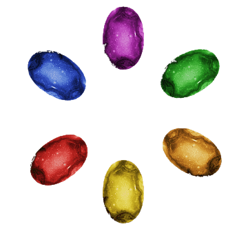
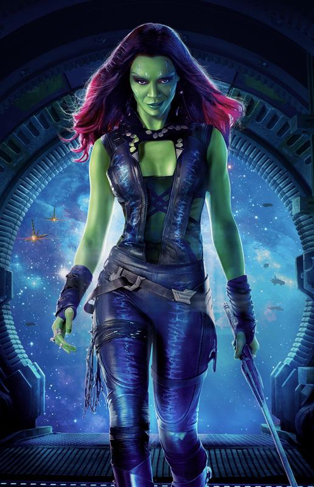
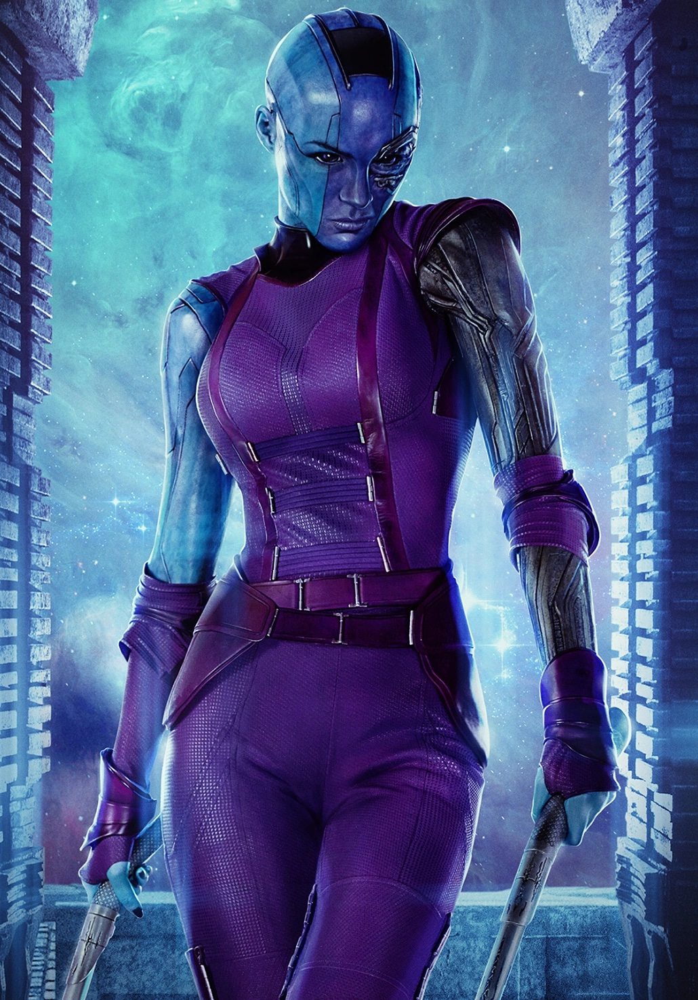
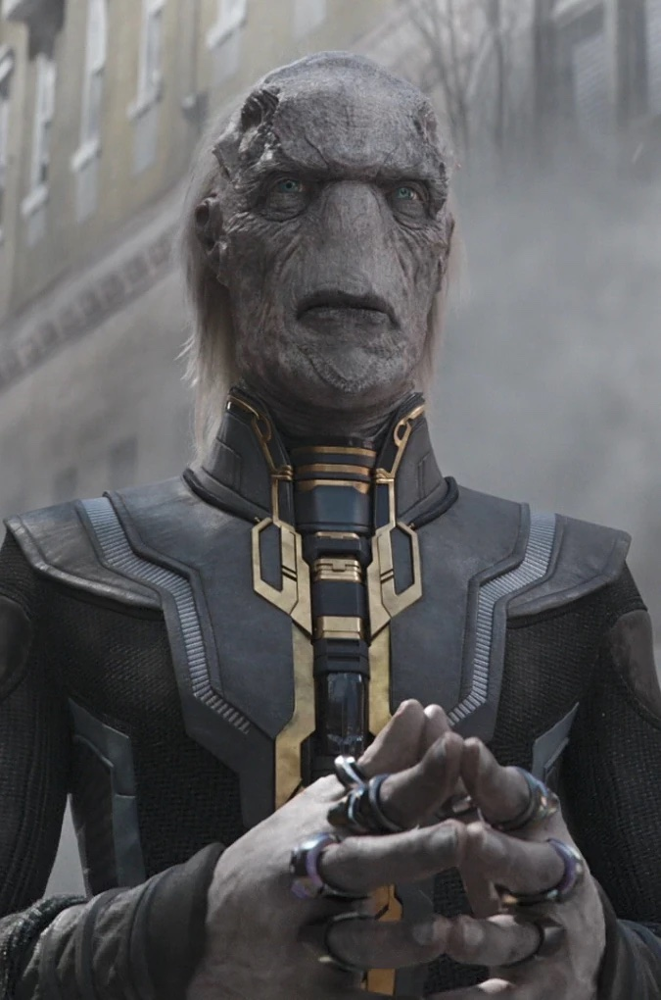
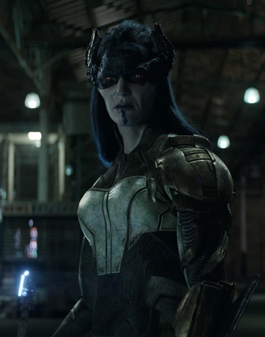
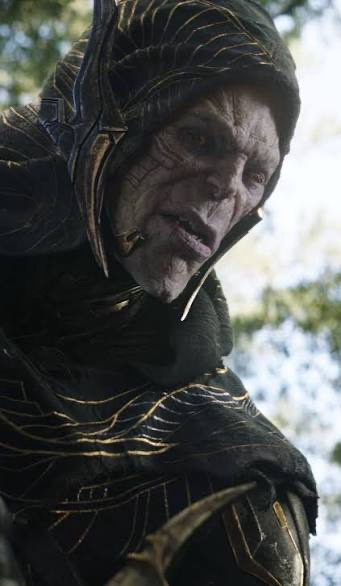
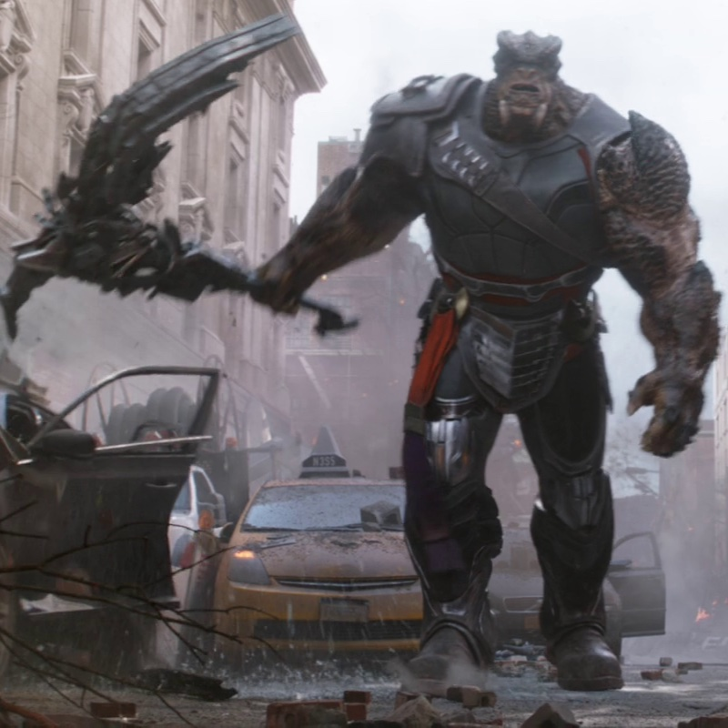
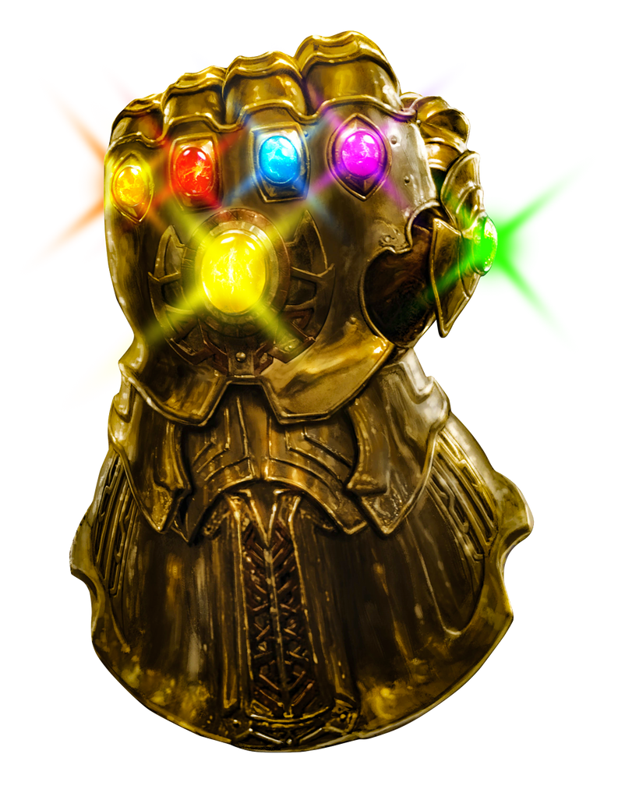
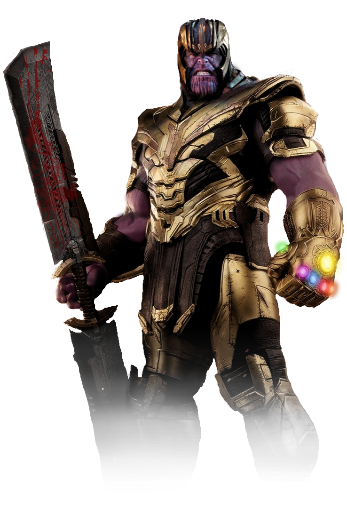

Quem ele é
Thanos nasceu em Titã, uma lua de Saturno. Ele viu seu povo morrer por superpopulação e falta de recursos, e ninguém quis ouvir seu plano. Expulso do próprio planeta, virou o conquistador mais temido da galáxia, comandando a Ordem Negra e criando filhos adotivos como Gamora e Nebulosa.

O objetivo
Thanos queria equilibrar o universo eliminando metade de toda a vida, de forma aleatória, para que o resto pudesse prosperar. Para isso, precisava reunir as seis Joias do Infinito e colocá-las na Manopla.
Os filhos de Thanos
Thanos criou seus filhos como soldados. Nenhum deles é de sangue: ele os adotou depois de conquistar seus mundos.
-

Gamora Filha adotiva favorita. Thanos a sacrifica em Vormir para pegar a Joia da Alma. -

Nebulosa Irmã de Gamora. Foi treinada e reconstruída por Thanos, e acaba se virando contra ele. -

Ebony Maw Da Ordem Negra. Usa telecinese e a persuasão para convencer os outros. -

Proxima Midnight Da Ordem Negra. Luta com uma lança e é a mais rápida e letal do grupo. -

Corvus Glaive Da Ordem Negra. Marido de Proxima, luta com uma lâmina que se regenera. -

Cull Obsidian Da Ordem Negra. O mais forte fisicamente, um gigante de pura força bruta.
Joias do Infinito
- Espaço Abre portais e teletransporta para qualquer lugar.
- Mente Controla pensamentos e dá acesso a toda a consciência.
- Realidade Reescreve a realidade e transforma a matéria.

- Poder Libera energia quase ilimitada.
- Tempo Controla o passado, o presente e o futuro.
- Alma Domina as almas dos vivos e dos mortos. Custa o sacrifício de quem se ama.

Até a morte
Em Guerra Infinita, Thanos sacrifica Gamora para pegar a Joia da Alma, arranca a Joia da Mente da cabeça do Visão e estala os dedos: metade da vida some. Depois se isola numa fazenda. Em Ultimato, ele destrói as Joias, mas os Vingadores voltam no tempo e trazem o Thanos de 2014 para a batalha final. Tony Stark pega as Joias e estala os dedos. Thanos vira pó.
Eu sou inevitável
Assista à cena. Quando o vídeo terminar, o destino é inevitável.